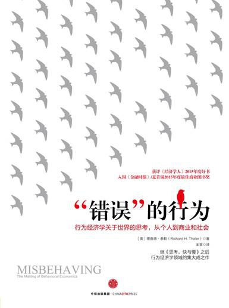

|  |
“错误”的行为：行为经济学关于世界的思考，从个人到商业和社会 |
引言
特沃斯基的故事
特沃斯基不想公开自己的健康状况，原因是不想在自己最后的日子里只做一个行将就木的人，他还有工作要完成。作为研究判断和决策行为的先行者，他和卡尼曼决定编辑一本专著，将他们俩与其他心理学家的论文汇集成册，命名为“选择、价值以及框架”（Choices, Values, and Frames）。特沃斯基想做自己喜欢的事：完成工作，陪伴家人，看篮球比赛。在这段时间里，特沃斯基不希望别人看望他，但与工作有关的来访除外。所以，在他去世的6个星期前，我以要完成一篇我们合著的论文这一牵强的理由拜访了他。我们研究了一会儿论文，又一起看了一场NBA（美国职业篮球联盟）季后赛。
第一部分 行为经济学的发轫：1970~1978年
第1章 经济人与非理性的人
经济学理论的核心假设是，人们做选择时会遵循最优化原则。在一个家庭可能会购买的所有商品和服务中，这个家庭会在自身可承受的范围内选择最好的。另外，经济人做选择时的依据会被视为没有偏见的，也就是说，他们做决定时会基于“理性预期”。如果创业人士认为平均成功率为75%，那么这应该是对实际成功率的一个很好的预估。经济人是不会过度自信的。
经济学家的主要工作就是收集和分析市场数据，他们的研究通常十分谨慎，而且需要深厚的统计学知识。更重要的是，大多数研究并不是建立在最优化的基础之上。过去25年中出现了两种研究工具，极大地提高了经济学家了解世界的能力。第一种工具是随机控制实验，长期以来它一直被用于医学等科学领域，最典型的实验就是研究一些人接受了某种利益“处理”后会发生什么。第二种工具是自然实验（比如有些人加入了某个项目而其他人没有）或是巧妙的计量经济学方法。即使在没有特意设计某种情境的情况下，计量经济学方法也能发现处理因素的影响。这些新工具催生了大量有关社会重要问题的研究。研究中的处理因素包括：接受更多的教育、小班授课、安排更好的老师、提供咨询和管理服务、帮助就业、判刑、搬到更贫困的地区、接受医疗补助计划中的健康保险等。这些研究表明，即使不用最优化模型，我们也可以从很多角度了解世界。有些研究提供了可信的证据，可以检测最优化模型是否与人们的真实反应一致。
第2章 机会成本和禀赋效应
基于这篇研究生论文，我和舍温又合写了一篇学术论文。通过我们计算得出的生命价值一直以来不断更新，直到现在仍被用于政府的成本效益分析。目前，一个生命的价值大约为700万美元。
在写作研究生论文期间，我觉得如果问人们一些假设性的问题应该很有意思，而且这些问题可以作为另一种方式，用以得出人们在权衡金钱和死亡风险时的偏好。在写下问题前，我首先要确定应该怎么来问这些问题：是问他们愿意支付多少钱，还是愿意接受多少钱？如果采用第一种问法，问题就是：你愿意支付多少钱，以降低明年的死亡风险概率，如千分之一？如果采用第二种问法，问题就是：如果需要承受同等概率的死亡风险，你会要求得到多少钱？结合各种数据可计算出，一位50岁的美国公民一年中面临的死亡风险概率约为0.4%。
其中一个例子与经济系主任~~理查德·罗塞特（Richard Rosett）~~有关，他一直是一个十分喜欢收藏葡萄酒的人。他告诉我在他的酒窖中，有的酒是他当初花10美元买来的，现在却价值100美元。实际上，当地有位叫伍迪（Woody）的酒商愿意以当前的市价收购罗塞特收藏的酒。罗塞特说自己会在某个特殊的日子开一瓶葡萄酒喝，但绝不会花100美元买一瓶葡萄酒喝，他也没有把酒卖给伍迪，这很不理性。如果他愿意喝掉一瓶能卖100美元的酒，那么这瓶酒的价值肯定是100美元。既然如此，他为什么不愿意花100美元买一瓶这样的酒呢？为什么他拒绝购买任何价值接近100美元的酒呢？作为经济学家，罗塞特知道这样的行为并不理性，但他依然这么做了。
这些案例都涉及一点，即经济学家所说的“机会成本”（opportunity cost）。某项活动的机会成本是指，为了这项活动而放弃的其他活动的价值。如果我今天去登山，而没有待在家里看球赛，那么我登山的机会成本就是看球赛的乐趣。对于那瓶100美元的酒来说，喝这瓶酒的机会成本就是伍迪愿意出的价钱。不管是罗塞特喝了自己的藏酒或是买一瓶葡萄酒喝，其机会成本都是一样的。但是，我们可以从罗塞特的行为中看出，即使是经济学家有时也不会将机会成本等同于实际的现金支出。自掏腰包购买这种产品比放弃出售这种产品的机会更令人不情愿。与实际支付现金相比，机会成本是模糊的、抽象的。
我的朋友汤姆·罗素（Tom Russell）讲了另外一个有趣的案例。信用卡开始普及的时候，信用卡发卡机构与零售商打起了官司，他们争论的问题是，对于使用信用卡的消费者和支付现金的消费者，商家是否可以收取不一样的价钱。因为信用卡发卡机构会向零售商收取交易处理费用，所以有些零售商，尤其是加油站，想要向信用卡用户收取更高的价钱。当然，信用卡行业并不喜欢这种做法，他们希望消费者认为使用信用卡是免费的。当这个案件进入监管程序后，信用卡发卡机构采取了两边下注的策略，并将重点放在形式而非内容上。他们坚称，如果商店一定要对使用信用卡的消费者和支付现金的消费者收取不同的价钱，那么“正常价格”应该是向信用卡用户收取的价钱，而现金用户则可以享受“打折”的优惠。另一种方法则是，将向现金用户收取的价钱设定为正常价格，而信用卡用户则需要支付“附加费”。
对于理性的经济人而言，这两种策略其实是一样的。如果向信用卡用户收取1.03美元，向现金用户收取1美元，那么你将3分钱的差价说成是“折扣”或“附加费”并没有什么区别。尽管如此，信用卡行业都更倾向于打折的做法，他们的这种做法其实是正确的。很多年后，卡尼曼和特沃斯基将这种差别称为“框架”（framing）效应，但在此之前营销人员已经察觉到了框架效应的重要性。支付附加费是要从兜里掏钱的，而享受打折“只是”机会成本。
我将这种现象称为“禀赋效应”（endowment effect），因为用经济学家的行话说，你拥有的东西属于你的一部分禀赋；另外，我偶然发现，与你即将拥有的那些东西相比，你更看重自己已经拥有的东西。
禀赋效应对人的某些行为有显著的影响，比如是否参加某场特殊的音乐会或体育赛事。通常来说，这些活动的零售票价会远低于市场价。有些人很幸运，通过排队或者以最快的速度点击网页，买到了门票。这时，他们需要做一个决定：是去看比赛，还是把票卖出去？现在很多国家都设有简单、合法的网上市场，人们可以在上面转售各种门票，比如Stubhub.com网站。有票的人无须站在赛场外兜售，在互联网上就可以通过售出自己手上的门票而发一笔小财。
迪安和他神学院的朋友都认为，“把票卖了还是去观看比赛”这个决定很容易做。那位神学院的学生邀请别人和他一起去观看比赛，而且看得很高兴。迪安则忙着琢磨哪些教授既是篮球迷，同时又做着利润丰厚的咨询工作。最后，迪安的两张票都卖了数百美元。迪安和他神学院的朋友都认为对方的行为很愚蠢：迪安无法理解他的朋友怎么会认为自己看得起那场球赛，而他的朋友则无法理解为什么迪安意识不到那两张票是免费的。
第3章 非理性行为清单
我盯着我列举的例子看了好一会儿，并不断加上新的例子，但我并不知道对这些例子我能做些什么。以“人们做的蠢事”为题写一篇学术论文，实在不能令人满意。后来，我决定暂时把这件事放下。1976年夏天，我和舍温去加州蒙特雷附近的一个地方参加一次会议，探讨生命的价值。对我来说，这次会议最特别的地方就是有两位心理学家出席，他们是巴鲁赫·菲施霍夫（Baruch Fischhoff）和保罗·斯洛维奇（Paul Slovic），都在决策研究方面有所建树。见到他们，我仿佛发现了新物种，因为我尚未在学术圈见过拥有像他们这样背景的人。
会议结束后，我开车送巴鲁赫去机场。路上，巴鲁赫告诉我，他在以色列希伯来大学拿到了心理学博士学位。他导师的名字我在此之前从未听说过：阿莫斯·特沃斯基和丹尼尔·卡尼曼。巴鲁赫和我讲起他的论文，是有关“后见之明的偏见”（hindsight bias）的，现在这篇论文在学术界的知名度很高。该论文的结论是，事情发生过后我们会认为自己早就知道结果会是这样。当竞选前几乎无人知晓的非裔美籍议员巴拉克·奥巴马（Barack Obama）打败众人都看好的希拉里·克林顿（Hillary Clinton），成为民主党总统候选人后，很多人都认为自己早就知道结果会是这样。但是，其实他们原本并不知道。
我觉得后见之明的偏见这个概念很有意思，对管理领域来说绝对非常重要。公司CEO（首席执行官）面临的最大难题之一就是，在项目有风险但预期收益足够高时，如何让手下的管理者相信他们应该做这些项目。管理者会担心，如果项目进展十分不顺利，不管当时的决定是好是坏，主持项目的那个经理都将受到批评，他们的担心是有充分理由的。后见之明的偏见极大地加剧了这个问题的严重性，因为CEO会误以为不管项目失败的原因何在，都应该能提前预测到。另外，因为后见之明的偏见的存在，CEO认为自己早就知道这个项目风险很高。事实上，我们总会看到别人的偏见，却无视自己的偏见，这会导致后见之明的偏见害处更大。
巴鲁赫认为，我可能会喜欢读他导师的著作。第二天，我刚回到罗切斯特大学的办公室，就起身去了图书馆。此前我一直关注的都是图书馆中经济学区域的书，那天我却觉得自己身处图书馆里一个全新的地方。我最开始读的是巴鲁赫的两位导师发表在《科学》（Science）杂志上的总结性论文——“不确定性下的判断：启发法和偏见”（Judgment Under Uncertainty: Heuristics and Biases）。当时，我还不清楚“启发法”具体是什么意思，之后才明白它原来是经验法则的一种华丽表达。读这篇文章的时候，我的内心激动不已，仿佛观看一场比赛的最后几分钟一样。从头至尾读完那篇文章，我用了30分钟，但正是这30分钟彻底改变了我的人生。
文章的论题十分简洁，即人类的时间和脑力是有限的，所以人们会使用简单的经验法则（启发法）做出判断。以“可得性”为例，假如我问你“德鲁弗”（Dhruv）是不是一个常见的名字，如果你来自印度以外的其他国家，你很可能会说不是，但德鲁弗这个名字在印度却很常见。鉴于印度人口众多，所以以全球人口的角度来看，这个名字其实属于常见名。在思考某件事发生的频率时，我们往往会问自己，我们能够想起多少类似的事。这是一条很好的经验法则，在我们所在的社区，我们能回想起的叫某个名字的人的数量，是推断这个名字实际出现频率的一条很好的线索。但是，如果某件事的发生次数与你能想到的实例（比如德鲁弗这个名字）的相关性不强，经验法则就会失效。这篇文章的主要论点是人们使用这样的经验法则时会犯下“可预测的错误”（predictable error），所以论文题目叫作“启发法和偏见”。上述那个例子就很好地证明了这个让我激动得双手颤抖的论点，可预测的偏见这个概念为我后来的一系列想法提供了框架。
在特沃斯基和卡尼曼之前，这个领域还有一位先驱人物，他就是赫伯特·西蒙（Herbert Simon）。他博学多才，职业生涯的大部分时间都在卡内基–梅隆大学度过。西蒙几乎在社会科学的所有领域都很出名，包括经济学、政治学、人工智能和组织理论。但有一点让他与本书的关系最密切：他早在特沃斯基和卡尼曼之前就撰文讨论过“有限理性”（bounded rationality）。西蒙提出，人的理性是有限的，意思是人们缺少解决复杂问题的认知能力，这一点显然是正确的。虽然他获得了诺贝尔经济学奖，但我认为他对经济学领域的影响甚微，这么说其实很公平。我相信很多经济学家都忽略了西蒙的研究，因为他们很容易将有限理性看作“正确但毫不重要的”概念。如果你说经济学家的模型不精确，或是这些模型所做的预测存在一定的错误，他们肯定会接受你的说法。他们的处理方式是在所用的统计模型中加入“误差”（error）一词。假设你要用父母的身高作为预测因子来预测他们的小孩成年后的身高，统计模型会表现得很好，因为高个子的父母一般会生出高个子的孩子，但是该模型又不会十分精确，这就是使用误差一词的妙处。另外，只要误差是随机的，也就是说，模型得出过高或过低的结果的频率相等，就万事大吉了，因为其中产生的误差会相互抵消。这就是经济学家认为有限理性产生的错误完全可以被忽略的原因，还是依靠完全理性的模型吧！
卡尼曼和特沃斯基冒着会引发众怒的危险声称，这些误差并不是随机的。如果我们问美国人，被枪杀的人数多还是饮弹自杀的人数多，大多数人都会说他杀的人数更多，但实际上用枪自杀的人几乎是被枪杀的人数的两倍。这就是一个可预测的错误。即使回答这个问题的人很多，误差的平均值都不会为零。虽然当时我还未能完全领会其中的奥秘，但卡尼曼和特沃斯基的真知灼见已经把我向前推了一步，使我对自己列的行为清单有了进一步的认识。清单上的每个案例都是一种“系统性偏差”（systematic bias）。
此外，这些案例还有一个值得注意的特点。在每个案例中，经济学理论对其中的重要问题都有一个十分明确的预测，比如腰果是否要端下去，以及篮球比赛门票的价格等。经济学理论明确表示，这些问题不应该影响决策，它们都是看似无关的因素。后来有大量的行为经济学研究显示，这些看似无关的因素对于预测人们的行为至关重要，并且应用的解释依据往往是特沃斯基和卡尼曼1974年那篇论文中所提出的系统性偏差。到此时为止，我的清单已经列得很长了，远远超过几年前我在办公室黑板上所列的那些。
按照时间段的顺序，讲述了行为经济学的起步、发展及现状，作者算是行为经济学学科的创始人之一，所以作者对于自己当时的心理描述十分精彩，比如在提出对传统经济学有挑战性的观点时，作为科研新人如何权衡利弊，拿捏用词，真实体现了科研界的现状。科普了一些基本的经济学和心理学概念，很有趣。